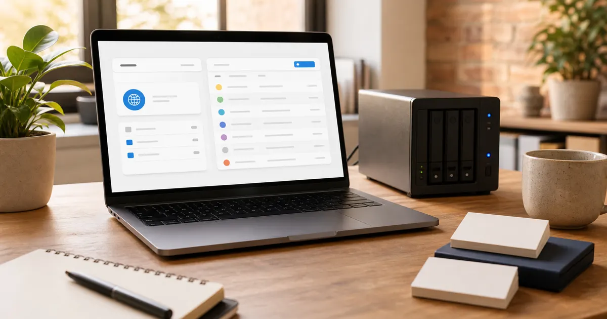
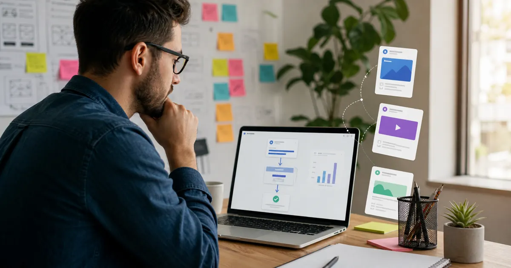
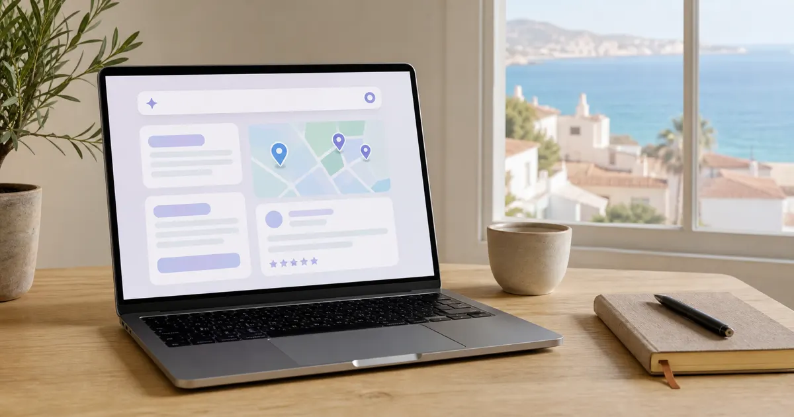
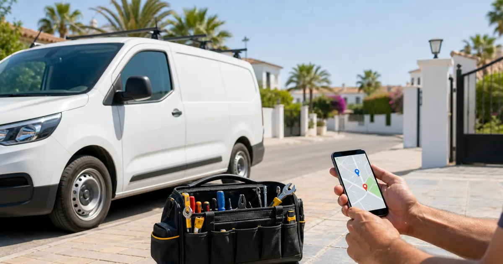
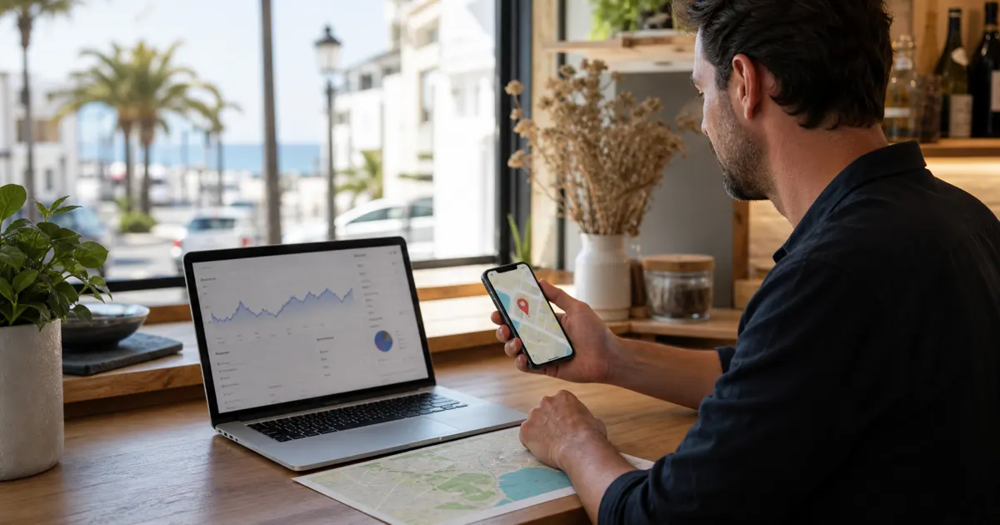

Dominio y hostingVerkkotunnus, hosting ja sähköposti paikalliselle yritykselle
Mitä kukin osa tekee, mitä kannattaa hallita itse ja mitkä yksityiskohdat ehkäisevät ongelmia myöhemmin.
Lue artikkeliSelkeitä artikkeleita verkkosivuista, paikallisesta SEO:sta, Googlesta, somesta ja tekoälystä paikallisille yrityksille.

Dominio y hostingMitä kukin osa tekee, mitä kannattaa hallita itse ja mitkä yksityiskohdat ehkäisevät ongelmia myöhemmin.
Lue artikkeliPäivitykset, tietoturva, muutokset, perus-SEO ja tekninen tuki selitettynä paikallisille yrityksille.
Lue artikkeli
Landing pagesMiksi maksettu liikenne tarvitsee kohdennetun sivun eikä vain yleistä etusivua.
Lue artikkeli
Búsqueda con IAMikä muuttuu, kun käyttäjät pyytävät paikallisia suosituksia ChatGPT:ltä, Geminiltä, Perplexityltä ja tekoälyvastauksilta.
Lue artikkeliMiten arvostelut vahvistavat luottamusta, paikallista SEO:ta ja yhteydenottoja, kun ne yhdistetään verkkosivuun.
Lue artikkeliMiksi mobiilinopeus vaikuttaa paikallisen yrityksen luottamukseen, sijoituksiin ja yhteydenottoihin.
Lue artikkeli Expectativas reales
Expectativas reales
Mikä voi parantua nopeasti, mikä vie yleensä enemmän aikaa ja miten näkyvyysongelmia kannattaa tulkita.
Lue artikkeli
Decisión comercial
Milloin some auttaa, milloin se ei riitä ja miksi verkkosivu muuttaa huomion usein paremmin yhteydenotoiksi.
Lue artikkeliMiten WhatsAppia käytetään ilman, että sivu täyttyy painikkeista ja häiriöistä.
Lue artikkeli
Servicios a domicilioMiten liikkuvat palvelut voivat saada näkyvyyttä palvelualueilla, arvosteluilla ja selkeillä sivuilla.
Lue artikkeliTerveyspalvelun sivun pitää ensin rakentaa luottamusta: selkeät palvelut, tiimi, arvostelut ja helppo ajanvaraus.
Lue artikkeliVaraukset, menu, aukioloajat, aidot kuvat ja Google Maps: perusta parempaan ravintolan konversioon.
Lue artikkeliYhden sivun verkkosivu voi toimia, kun tavoite on selkeä, mutta se ei aina ole paras pohja SEO-kasvulle.
Lue artikkeli
Google BusinessGoogle-profiilin ja verkkosivun ei pitäisi kilpailla: yhdessä ne auttavat asiakasta päättämään varmemmin.
Lue artikkeliVirheet, jotka heikentävät paikallista verkkosivua, vaikka se näyttäisi ensisilmäyksellä hyvältä.
Lue artikkeli
SEO local
Profiili, arvostelut, paikalliset signaalit ja verkkosivu: asiat, jotka yleensä vaikuttavat Maps-näkyvyyteen.
Lue artikkeli
Precios y alcance
Mikä hintaan oikeasti vaikuttaa, milloin yksinkertainen sivu riittää ja miksi pelkkää loppusummaa ei kannata verrata.
Lue artikkeliPerusrakenne, jolla paikallinen verkkosivu selittää yrityksen, tuo yhteydenottoja eikä nojaa vain someen.
Lue artikkeli
SEO local e IA
Mitä kannattaa erottaa kaupungeittain, milloin paikalliset laskeutumissivut toimivat ja miten tekoäly sopii hankintaan.
Lue artikkeli Negocio local
Negocio local
Hyödyt, haitat, Googlen ja somen erot, Meta-mainonta ja miksi oma digitaalinen perusta on edelleen tärkeä.
Lue artikkeli IA y visibilidad
IA y visibilidad
Miten ChatGPT, Gemini ja Perplexity vaikuttavat jo siihen, miten asiakkaat löytävät ja vertailevat yrityksiä.
Lue artikkeli